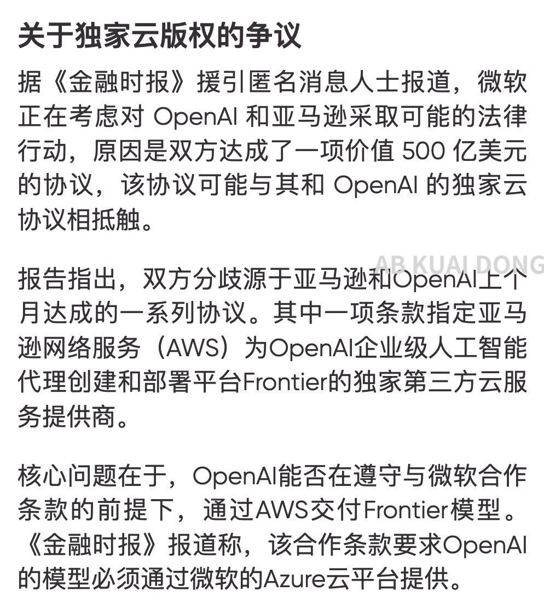

我决定作为浣熊度过一生
@Ailith_Caeron
@_FORAB 接oai倒闭开源旧模型🤲

AB Kuai.Dong
@_FORAB
啊！大金主微软要考虑起诉 OpenAI？
微软此前向 ChatGPT 的 OpenAI，投资超过 130 亿美元，并获得其模型，在自家云服务 Azure 上独家部署及 API 调用权。
然而，OpenAI 在完成新一轮融资后，就跑去与亚马逊，达成一项规模约 500 亿美元的合作协议。
双方提出了一个新架构，在技术上可试图绕开传统 https://t.co/it0svx3PYu https://t.co/Y5rq11fnPY